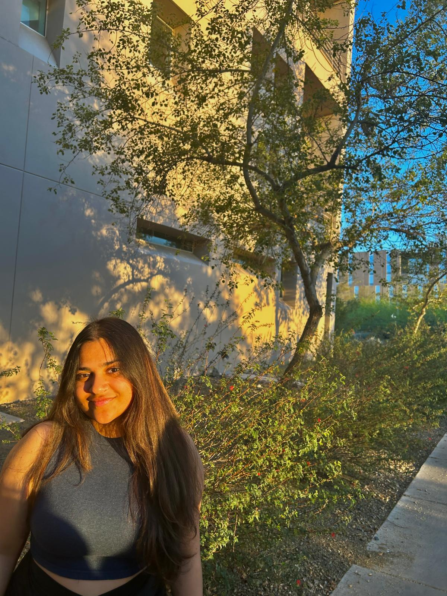

Computer Science undergrad at ASU | Aspiring Intern for Summer 2025 | Coder | Musician

I'm a junior majoring in Computer Science at Arizona State University, with a passion for building technology that’s thoughtful, scalable, and human-centered. My academic and personal projects reflect a deep interest in the intersection of web development, machine learning, and user experience design. Over the years, I've taken a hands-on approach to learning — diving into front-end tools like React and Tailwind CSS, strengthening my backend fundamentals, and exploring the possibilities of intelligent systems through Python and AI frameworks.
Whether I'm designing a dynamic UI or debugging logic behind an ML model, I enjoy solving problems with equal parts creativity and precision. I love collaborating on meaningful projects, contributing to open-source communities, and pushing myself to grow as a developer.
I’m currently seeking opportunities that allow me to apply and deepen my skills while making an impact in real-world applications. One of my greatest motivations for pursuing CS is that it lets me blend logic with imagination — building applications that are both functional and expressive.
Always looking forward to opportunities that allow me to learn, grow and contribute to innovative projects!
Hey! I’m someone who’s constantly curious — if something moves, makes noise, or lights up, chances are I’ve already wondered how it works. Blame it on growing up around a mechanical engineer dad — I’ve picked up more mechanical terms from his phone calls than any textbook ever taught me.
TL;DR: I'm an energetic, curious, slightly chaotic mix of a coder, creative, and somewhat driven towards Music.
Software Engineering Intern – Maxgen Technologies, Pune (May 2024 – July 2024)
Technical Outreach Lead – Sur Devils, ASU (Jan 2025 – Present)
Administrative Assistant – Mahindra CIE, Pune (May 2023 – Aug 2023)
Artificial Food Aggregator Program – ESSENS
Feel free to reach out for collaboration, projects, or just to say hi! 💬